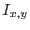
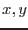
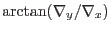

This task approximates the gradient at each pixel of an image by doing least-squares fitting of a plane to the 3x3 array of values centred on each pixel. Since gradient is a vector quantity, two output images are required. The user can choose between a cartesian representation (in which the output images record the x and y components of the gradient) or a polar representation (in which the output images are the magnitude and azimuth of the gradient.).
`Least-squares fitting of a plane' sounds very grand but in fact the algebra boils down to the following:
Here  represents the image value at the ()th pixel.
No gradient value is calculated at the edge: nulls are stored in the output at these pixels. If the input image contains null-valued pixels, all 8 nearest neighbours of such pixels are set to null in the output.
The azimuth, where this is to be calculated, is .